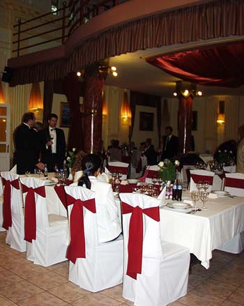

Mađarska svadba
ãetrtek, 4. junij 2009. u 3:10 PM
Piše: La Lara
Rubrike: Gastronomija/Enologija | Lifestyle | Putovanja
 Pre mesec dana bila sam u Mađarskoj, na svadbi drage prijateljice.
Prilika da se spoje putovanje, druženje, dodatno upoznavanje kulture, hrana, piće, haljine, i na kraju Budimpešta i banja je, za mene, za nepropustiti.
Svadbe spadaju među najbitnije i najzanimljivije običaje u društvu, bez obzira na promene i pojednostavljivanja kroz vreme, globalizaciju i slično.
I, da, ljude definitivno interesuje kako sve to izgleda negde drugde, a prilike za saznavanje i nisu baš česte. Moja iskustva u tom pogledu su skromna: Jednom sam u Poljskoj bila na crkvenom venčanju, i jednom smo u Grčkoj, slučajno, naišli na svadbu u bašti restorana, pa i svratili i uhvatili se u kolo. Ali, nikad nisam učestvovala u celom procesu kao ovde u Mađarskoj, uključujući i par dana pre i par dana posle.
Genealni zaključak je: Sve je vrlo slično kao na jednoj prosečnoj gradskoj svadbi kod nas, samo sa malo manje drame.
Što znači: Ljudi su mirniji i muzika je tiša.
Mlada, logično, prolazi kroz ceo proces priprema: Frizura, šminka, odeća, sa sve probama uoči velikog dana. Kuća će biti puna rodbine, i pre i posle. Venčanje u crkvi i u restoranu. Hrana, običaji, pokloni, nešto za spremiti gostima. Umor mladenaca i najuže rodbine posle, mamurluk kod dobrog dela ostalih.
Hrana je praktično ista. Pileća supa. Kuvano meso, šargarepa, krompir (tzv. rinflajš), sa renom. Posle toga meso. Koje, ipak, nije ni pečenje ni roštilj, već šnicle (pohovane, sa sosom, ili nešto treće).
Zanimljive stvari dešavaju se u ponoć. Mlada se presvlači u crveno i pleše sa gostima, i za to dobija novac. Posle toga, mladenci obiđu salu, ona služi kolače, on rakiju (palinka). To su, simbolično, njihovi prvi pokloni kao venčanog para. Osim toga, tada se služi i sarma. Koja izgleda isto kao naša, nisam probala, ali pretpostavljam da je i ukus približno isti.
Jedna od karakteristika mađarske svadbe je i to da ima više igara/običaja u kojima mladnci aktivno učestvuju (alkoholisanje na razne načine za mladoženju, i zajednička akcija ubacivanja preko glave loptica u činiju - on baca, ona hvata). Pre prvog mladenačog plesa niko ne igra. Dok oni igraju, mlađi gosti stoje u krugu sa upaljenim svećama.
Osim palinke u ponoć, poslužiće vam i piće na ulasku, kasnije njihova odlična vina, u nekom momentu i penušavo.
Ova konkretna svadba je uglavnom imala anglosaksonsku muziku koju je svirao vrstan bend, pa o čardašu i uopšte mađarskoj muzici i plesu ne mogu reći mnogo.
Svi gosti koji su došli sa strane dobili su sobe u obližnjem hostelu, a najbliža rodbina i 'najuporniji prijatelji' nastavili su druženje i sutradan, kada je bio Dan Majki.
Naknadna druženja i spa program u Budimpešti su dodatno ulepšali ceo program i zaokružili zanimljivo putovanje.
 RSS feed
RSS feed
 sadržaji se objavljuju pod
sadržaji se objavljuju pod
Komentari
i wish i were there
luba | 04.06.09 21:52
Jos da napomenem da su momacko i devojacko vece, koji su se desili mesec dana ranije, bili ambiciozniji, kreativniji i provokativniji od bilo cega slicnog za sta sam ja cula, a ukljucivali su i international travel, izazovne igrice i iste poklone, prodaju kolaca na ulici itd.
LL Yahti | 05.06.09 10:33
I ovde su svadbe dosta skromnije i mirnije (ako izuzmemo limuzinu koja je obavezan deo folklora). Sad mi se jedna poznanica udala, kod rusa je velika svadba oko 20 ljudi. A uopste nije neuobicajeno da budu prisutni samo mame, tate i dva-tri prijatelja. Ono posle sto dolazi je restoran, sa ne tako puno muzike vec raznim drustvenim-svadbarskim igrama.
elektrokuhinja | 06.06.09 05:16
nisam znala da su Rusi tako umereni!
LLara | 07.06.09 09:42
Bila sam na rusko-srpskoj svadbi.
Bio je tu narodni ansambl, koji je docekao mladu i mladozenju sa hlebom i solju. Posle, mlada je dobila neku maramu, a mladozenji su stavili kapu pa su onda morali da ucestvuju u performansu. Ja sam tu znala samo "Ochi chornie" i tu se zabava zavrsava. Ali generalno sem tog "narodnog" bloka, svadba je bila dosta nekonvencionalna - bio je tu trbusni ples, rn'b i hip hop muzika i slicno ....
popkitchen | 09.06.09 10:40
Wow, kakav mix:) A gde se desavalo, ovde ili u Rusiji?
LLara | 09.06.09 10:44
llara, moloim vas, recite mi, da li ste nekada ziveli u uzoj srbiji?
jaca | 18.06.09 19:22
Oduvek. Sto?
LLara | 18.06.09 19:49